在紧张忙碌的生活中，我们几乎没有时间去关注周围的环境，也不会去留意人们行走的地面。因此我们便看不到脚下的几何图形（可能偶然跌倒后会看上几眼）。在这一小节中，我们将讨论一下人们身边的拼砖、瓷砖以及马赛克的形状和图案。
我们都知道马赛克是什么。但是为了更好地理解下面给出的数学分析，最好还是先了解一下马赛克的准确定义。马赛克是通过一种名叫特塞拉（小瓷砖）的片状物拼接在一起，相互之间紧密排列并且不重叠的表面覆盖物。
最让数学家感兴趣的是由多边形构成的马赛克图案，因为这些多边形有公共边和公共顶点，所以就为几何实验提供了绝佳的条件。马赛克镶嵌看似是一件苦差事，但马赛克图案却到处都有，比如我们自家卫生间的地板和墙面上，工作场所甚至大街上都十分常见。
镶嵌马赛克的挑战是要找到重复铺满一块区域的最小镶嵌图形。最小镶嵌图形可以是一块简单的瓷砖，通过平铺填满空间，这意味着马赛克不需要旋转或对称，只要不断重复镶嵌就可以了。这个过程就是所谓的周期性镶嵌。非周期性镶嵌并不是把最小镶嵌图形平铺在平面上，而是根据黄金比例完成这项工作。
正多边形的内角
下面这种方法可以算出任意正多边形的内角。由于正多边形各个内角全部相等，所以我们首先要知道正多边形的边数并算出它的内角和，然后用内角和除以边数得到每个内角的度数。
假设一个正多边形有A条边，为了算出它的内角和，我们选取任意顶点，然后画出该点到其他各顶点的对角线。对角线共有（A-3）条，因为除了两个相邻的顶点以外，选取的顶点可以和其他所有的顶点相连。这些对角线一共组成了（A-2）个三角形。这些三角形的内角和等于最初正多边形的内角和。我们都知道任意三角形的内角和为180°。因此正多边形的内角和为S=（A-2）·180°。
拥有A条边的正多边形，它的每个内角度数为
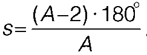
。我们以最常见的正多边形为例，将表达式中的A替换为边数，就得到了下面的表格：
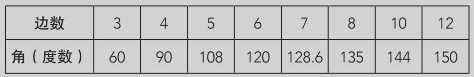
假设我们必须用同一种正多边形的马赛克来铺设地面（或任何其他平面），应该选择哪一种呢？我们通常认为只要是正多边形的马赛克都可以，但实际上并不是这样。例如正五边形的马赛克就不能用于镶嵌。为了证明这一点，我们需要画一些大小相同的正五边形，将它们从纸上剪下来后放在平面上，尽量将其不留缝隙地拼接起来。首先设法让正五边形的顶点相接。前两个正五边形可以做到这一点，但是当我们拼上第三个正五边形后，就会发现多出了一部分空间，而这部分空间无法再放入一个正五边形。
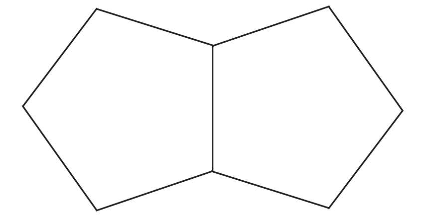
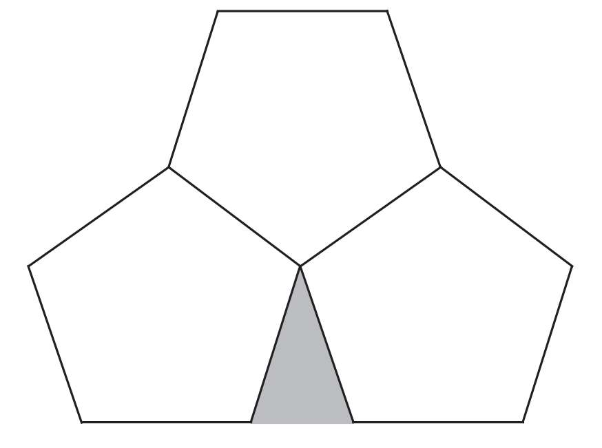
正五边形的每个内角为108°。对于三个顶点相接的正五边形来说，三个角相加等于3×108°=324°。如果相加等于360°，也就是一个周角的话，那多余的空间就不会存在。现在少了36°。如果再增加一个正五边形，就会出现相反的问题，它们的角度远远超过了360°。
这样我们就知道了镶嵌多边形的必要条件：每个内角相加必须等于360°。换种说法就是正多边形马赛克的一个角必须能被360°整除。那么哪些正多边形符合这一要求？答案只有正六边形、等边三角形和正方形。只有这三种正多边形的马赛克能够用来镶嵌。由于正六边形可以分成六个相同的等边三角形，因此只有两种正多边形可以在平面上镶嵌，它们是正方形和等边三角形。这两种图形被大量使用，在你身边的地板和墙壁上都能见到。
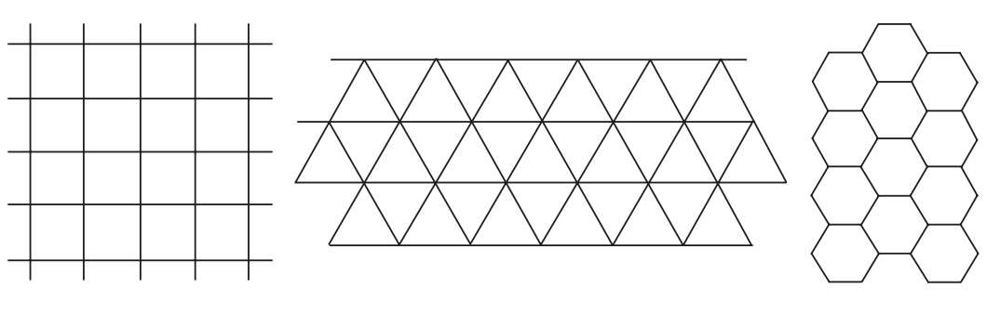
但是我们不会因为正五边形无法完美镶嵌就轻易放弃它。事实上，只要它不是“正”五边形就可以镶嵌，比如由正方形和等边三角形组成的五边形，或许我们更习惯将其描述为一个打开的信封。它是一个等边多边形，每条边的长度相等，但并不是所有的角都相等。人们还发现了许多其他可以镶嵌的不规则多边形。之所以很少用到它们，可能是因为不够美观。这并不是它们的几何缺陷。
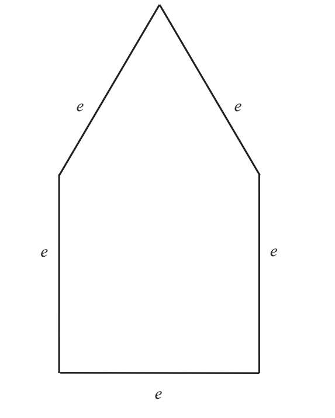
阿尔罕布拉宫是纳斯瑞德王朝的宫殿，该王朝统治着西班牙的格拉纳达，1492年被天主教军队征服。阿尔罕布拉宫是一座令人印象深刻的几何艺术古迹，也是世界上游客参观人数最多的旅游景点之一。如果我们分析这座宫殿的艺术装饰，就会发现它们都是基于某些简单的元素构成的。
我们会用三种镶嵌图形来证明这一点。通过对它们进行平移、重复镶嵌就会取得一些意想不到的效果。今天在我们身边还能够看到许多复杂的镶嵌图案，有些仍然体现着摩尔人古迹的艺术特色。
阿尔罕布拉宫中的第一种镶嵌图形称为“骨头”或“纳斯瑞德骨头”。下面是它的设计方法以及镶嵌的效果：
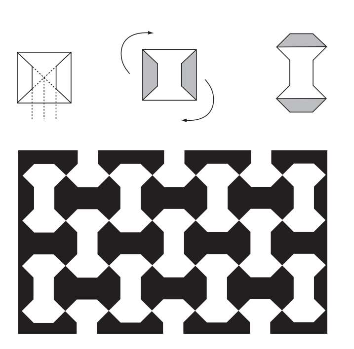
首先在一个正方形内画出两条对角线，将它的底边平均分成四段，在其交点处作垂线。接下来将垂线与对角线分割出的两个梯形移出，分别放置在正方形的上下两端。
第二种图形由三角形变形而来，被称为“小鸟”。这种形状的马赛克在今天十分常见：
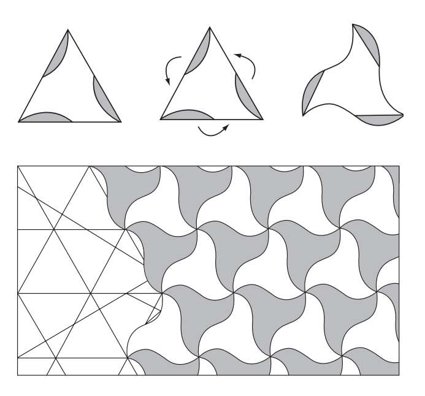
首先从等边三角形的每个顶点依次向每一条边的中点画弧。然后将弧形部分旋转到最初的三角形外侧。
第三种图形十分特别。它也来自正方形，人们将其称为“钉子”。
如果我们要在镶嵌艺术中寻找其他数学原理，就不能不提一个人，他就是荷兰艺术家埃舍尔。埃舍尔出生于19世纪末，他很早就将数学融入了自己的创作中。然而在1936年游览过阿尔罕布拉宫后，他才开始对镶嵌艺术产生兴趣。
到目前为止，我们已经知道了只使用一种镶嵌图形的正多边形（等边三角形和正方形），但是还有一种半规则的镶嵌图形，由成对不同的正多边形组成。和之前一样，镶嵌的唯一要求是最小镶嵌图形拼接在一起后，同一顶点的各角相加等于360°。
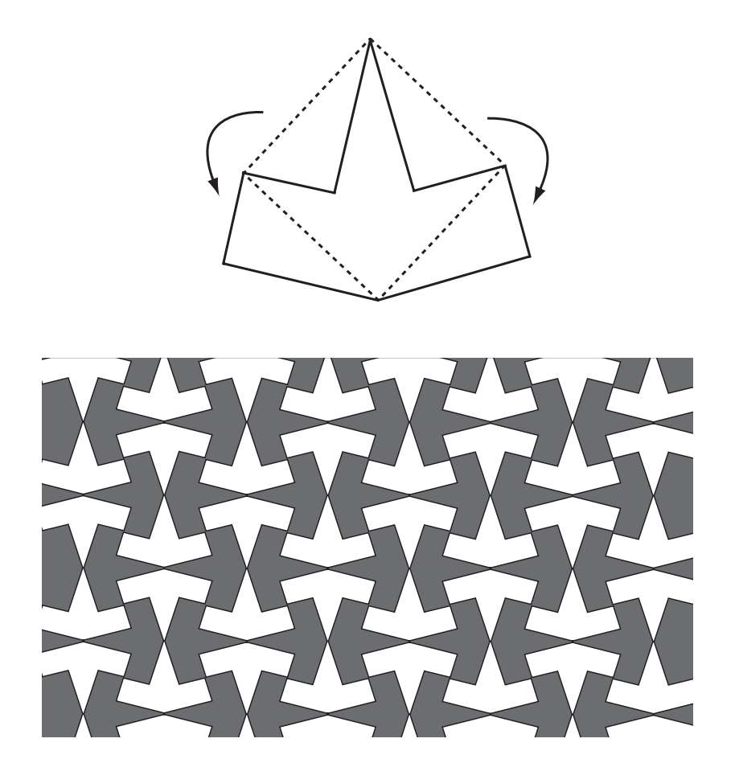
首先以正方形的两条边为斜边，分别在正方形内画出两个直角三角形。然后将它们分别放到正方形外侧的邻边上。
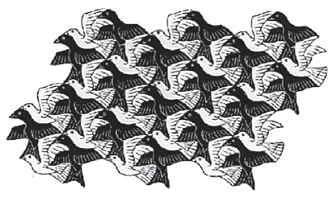
在这幅镶嵌作品中，埃舍尔将两只小鸟用作了镶嵌图形，尽管它们不是几何图形，但是仍然能够不留空隙地铺满平面。
许多设计都尝试着重复镶嵌图形来铺满空间，不留空隙。镶嵌图案会出现在五彩釉雕（又称石膏装饰）、窗栅、路面以及印花布料上。还有的出现在手工艺品上，比如针织品、钩织品、刺绣品。
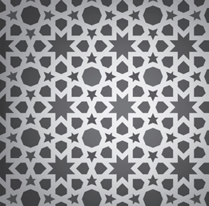
栏杆、马赛克以及布料上的图案经常通过重复镶嵌图形来铺满一片区域。而镶嵌图形通常都是几何图形。
设计你自己的镶嵌图案
要想设计出阿尔罕布拉宫中那样的图案并不容易，但这却是一次有趣的教学练习。我们不仅要创造出新颖的图案，还要掌握镶嵌背后的数学原理。这些例子可能会为你带来灵感，尝试着去设计一个属于自己的图案吧。
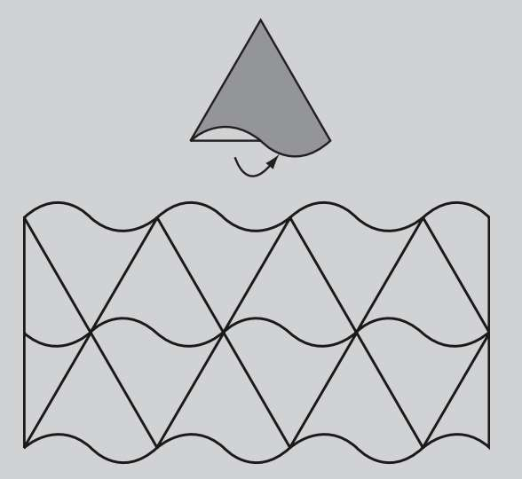
瓦片
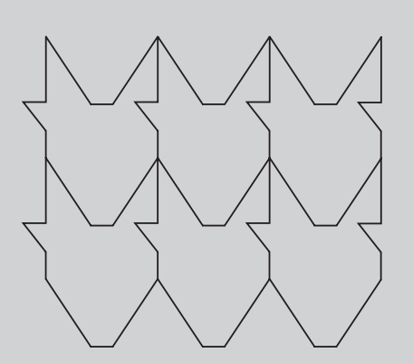
公牛
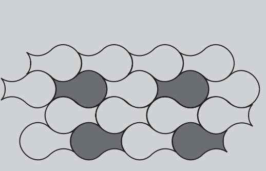
花瓶